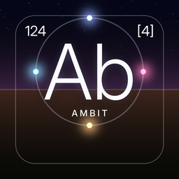

Ambit
Privacy policy · effective October 17, 2026
Ambit does not collect, store or share personal data. There are no accounts, ads, analytics or tracking, and the app sends nothing to the developer. Everything it hears is turned into sound on your iPhone and kept in memory only.
Bluetooth (Aether)
Ambit listens to the Bluetooth signals that nearby devices broadcast and uses only their signal strength and a random identifier that iOS assigns for this app. It never connects to those devices or reads what they say. Nothing about them is saved or transmitted.
Location, weather and satellites (Bellweathered and Orbitakt)
With your permission, Ambit uses your approximate location, rounded to about a kilometre, to hear the weather and the sky where you are. To do that it sends those rounded coordinates to Open-Meteo to fetch the weather, and downloads the public satellite catalog from CelesTrak (no location is sent to CelesTrak; satellites are placed in your sky on the phone). Your location is not stored or sent anywhere else. Without location permission, Ambit uses a default place and a simulated sky.
Your phone's data traffic (Leitmotif)
Ambit reads your iPhone's own network counters (how many bytes and packets it sends and receives) to turn the rhythm of your traffic into melody. It never sees the content of that traffic, where it goes, or which apps send it, and it uses no VPN. If you turn on the optional traffic log in Leitmotif's settings, those counts are saved to a file on your iPhone that only you can see and share; nothing is uploaded.
Stored on your device
Ambit remembers your settings (levels, the mix, keys and the like) and caches the satellite catalog. Deleting the app removes them.
Children
Ambit collects no data from anyone, including children.
Changes and contact
If this policy changes, the new version will appear on this page with a new date. Questions: open an issue on GitHub.